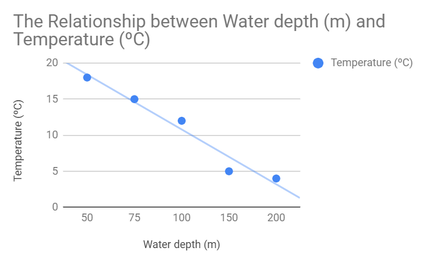
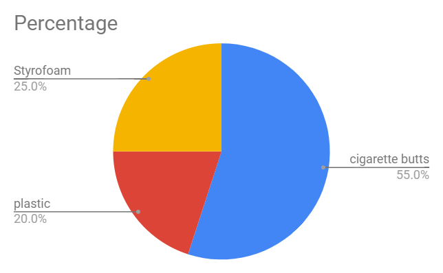
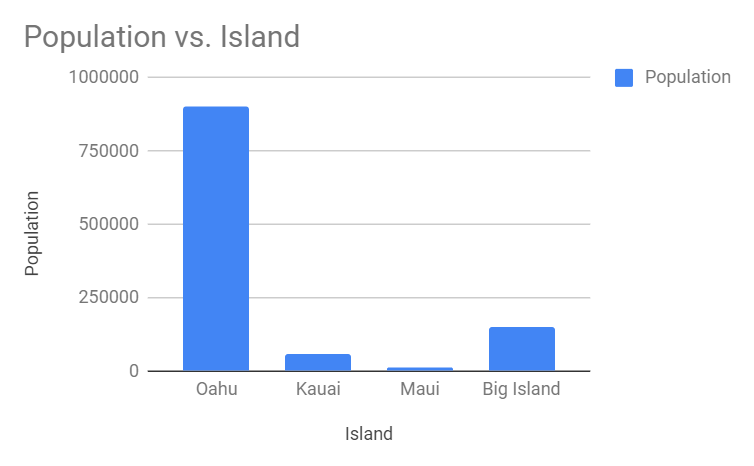

📈 Graphing Scenario #1 — X-Y Scatter Plot
The data table shows ocean water temperature at various depths. Graph on an X-Y scatter plot with a title.
Data Table
| Water depth (m) | Temperature (ºC) |
|---|---|
| 50 | 18 |
| 75 | 15 |
| 100 | 12 |
| 150 | 5 |
| 200 | 4 |
Sample Graph

-
Why did you use an X-Y scatter plot to graph the data?
To determine a relationship between the two variables.
-
What was the relationship between water depth and temperature?
Negative / linear — as water depth increases, temperature decreases in a straight-line pattern.
-
The approximate water temperature at a depth of 125 m would be:
~8 degrees ºC (read from the trend line between the 100 m and 150 m points).
🥧 Graphing Scenario #2 — Pie Chart
Beach cleanup at Sandys: 55% cigarette butts, 20% plastic, 25% Styrofoam.
Data Table
| Type of trash | Percentage (%) |
|---|---|
| cigarette butts | 55 |
| plastic | 20 |
| Styrofoam | 25 |
Sample Graph

-
What type of graph did you use and why?
Pie chart — to show parts of a whole.
📊 Graphing Scenario #3 — Bar / Column Chart
Populations: Oahu ~900,000, Kauai 58,000, Maui 120,000, Big Island 150,000.
Data Table
| Island | Population |
|---|---|
| Oahu | 900,000 |
| Kauai | 58,000 |
| Maui | 120,000 |
| Big Island | 150,000 |
Teacher note: The sample graph shows Maui as 12,000 — that’s a typo in the source; the correct value is 120,000.
Sample Graph

-
Why did you choose to create this type of graph?
A bar graph is used to compare groups (or categories that don’t change over time).